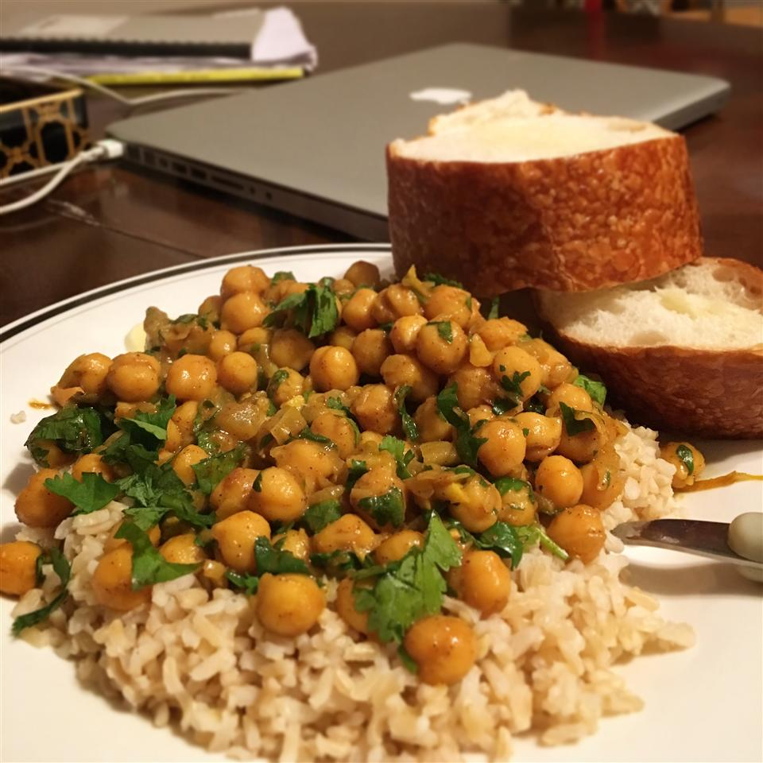

Chickpea Curry

Description
This chickpea curry recipe is the perfect vegetarian weeknight dinner: It’s full of flavor, easy to make with simple ingredients, and packed with protein.
Ingredients
- Onions and oil: This recipe starts with two minced onions cooked in vegetable oil.
- Garlic and ginger: Fresh garlic and fresh ginger lend bold flavor.
- Dried seasonings: The super flavorful chickpea curry is seasoned with whole cloves, cinnamon sticks, cumin, coriander, salt, cayenne pepper, and turmeric.
- Chickpeas: Of course, you’ll need chickpeas! Two cans, to be exact.
- Cilantro: Fresh cilantro gives the dish a pop of color and flavor.
Steps
- Cook the onion in oil.
- Stir in the garlic, ginger, and remaining seasonings.
- Cook for one minute, then stir in the chickpeas and their liquid.
- Cook until heated through, then remove from heat.
- Stir in cilantro just before serving.